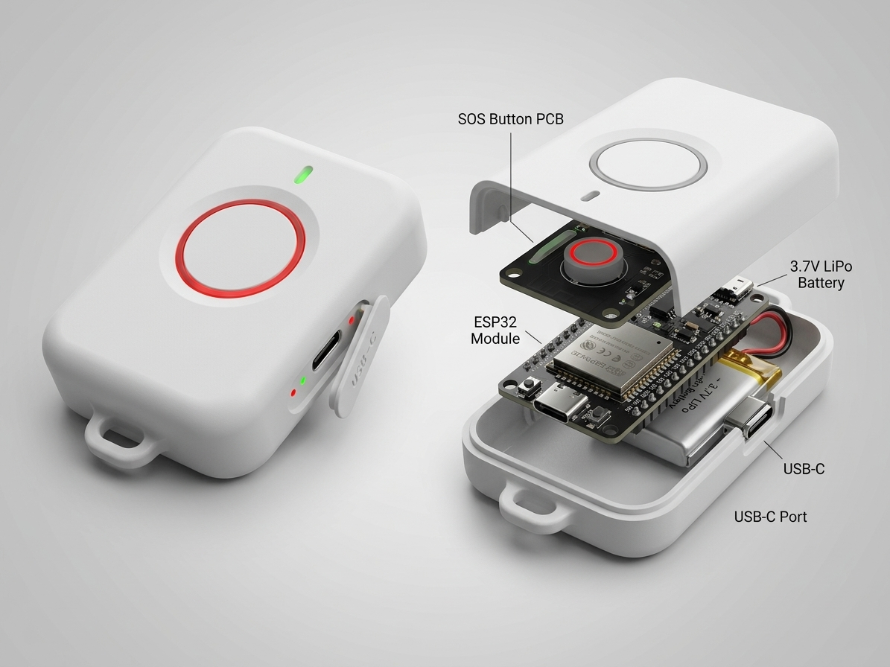
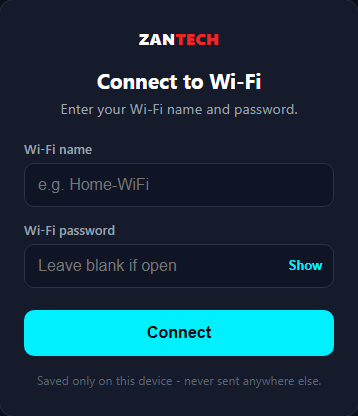

Dhaka · Bangladesh · Open to opportunities
Nakibul Islam
Founder and engineer who turns problems nobody's solving into things people can actually use.
It started in university, packaging robotics parts for classmates who had no idea what to buy for their course projects — a small hustle that turned into ZAN Tech, a robotics education company I co-founded and still run. What keeps me in it is watching that same problem play out at a much bigger scale: kids outside Dhaka who are just as curious as anyone, with far fewer chances to ever touch a robot. That's the whole reason Project Uddipon exists — free workshops we've now run for 5,000+ students across Bangladesh, and the number I actually care about most.
That same instinct — see a problem nobody's fixing, go build the fix — is what led me to Punosristi (EcoLoop BD), a platform I'm building to take on Bangladesh's plastic waste problem directly instead of writing another report about it. Alongside that, I do peer-reviewed research into problems I find genuinely interesting — how Bangla is actually spoken outside the news broadcast version of it, how secure a small IoT network can really be made, how farmers get the information they need before a season is already ruined — published in IEEE and Elsevier's Data in Brief (see my Google Scholar profile). I hold a CSE degree from Independent University, Bangladesh, and I'm finishing an MSc in Software Engineering there, mostly because I've never been able to stop at "good enough." And somewhere in between all of that, I also edit video on the side — which is how one of my cuts ended up as an official music video for a Bangladeshi band.

Currently
Present · Uttara, Dhaka
Co-Founder & CEO, ZAN Tech — curriculum, robotics kits, and school B2B partnerships, plus Project Uddipon, free nationwide STEM workshops.
Background
CSE graduate, Independent University, Bangladesh. Building software and hardware professionally since 2020.
Open
Open to opportunities in tech, robotics education, and sustainability.
Experience
Present
Co-Founder & CEO · ZAN Tech
Full-time · Uttara, Dhaka
Started this with Hana Sultan Chowdhury as a way to package robotics parts for classmates who didn't know what to buy for their course projects — it's since grown into a robotics education company with its own office, courses for Class 1–12, a parts store, and Project Uddipon, our free nationwide STEM workshop initiative.
How it started →Nov 2024–Mar 2026
Software Engineer · Jayga
Full-time · Hybrid
Brought in to take Jayga's warehouse rental business off spreadsheets and WhatsApp and put it on a real system. I designed and built the whole platform in Laravel — grid-by-grid space tracking, billing and invoicing, role-based access for admins, staff, and customers — then went out to the actual warehouses to test it against real racking, real boxes, and real stock counts before it went live.
View project details →2020–Aug 2024
Instructor · Instructory
Freelance · Dhaka
Alongside the day job, I teach video editing on Instructory under my own profile — Adobe Premiere Pro from the ground up, the way I'd have wanted to learn it. What started as documenting my own editing workflow grew into a full course with 600+ enrollments, a 5-star rating, and a Level 3 Instructor badge. It's led to real work too: I edited the official video for AVASH's song "Camera" after the band found me through the course.

Jan 2023–Jun 2024
Research Assistant · Independent University, Bangladesh
Dhaka
Worked hardware research projects end to end — building the devices, running the experiments, and writing up the results — which turned into several published papers and hands-on hardware, including the IoT-based soil salinity detection system later published at IEEE R10-HTC.
Aug 2022–Nov 2023
Student On Duty (SOD) · Independent University, Bangladesh
Dhaka
Taught two lab courses in parallel. In the CSE101 lab, I walked first-year students through Python from scratch — their first real code. In the CIS lab, the subject wasn't programming at all; it was the basics everyone's expected to already know but rarely gets taught — how to actually use Microsoft 365, how to structure a research paper, write a proper report, and build something useful in Excel and Power BI.
Feb 2017–Mar 2018
Project President · FGC Science Club
Full-time · Feni
Founded FGC Science Club at Feni Government College as a founding member — there wasn't a science club there before it, so building one meant registering it, recruiting the first members, and figuring out from scratch what it would actually do. As project president, I ran it like a real organization: workshops and competitions that gave other students at FGC a way into science and robotics that simply hadn't existed there before.
Selected Ventures
Education · 2020→
ZAN Tech
Bootstrapped STEM & robotics education company for KG–Class 12 students, based in Uttara, Dhaka. Builds curriculum (Explorer/Builder/Innovator/Specialist tracks), robotics kits (TriBot, Innovator Starter Kit), and school B2B partnerships, plus runs Project Uddipon — free nationwide STEM workshops.
Hardware · IoT
Punosristi (EcoLoop BD)
IoT reverse vending machine platform for plastic bottle recovery in Bangladesh, built under ZAN Tech. Raspberry Pi 4B + YOLOv8n bottle detection, React Native consumer app, Next.js admin dashboard, and a Fastify/PostgreSQL/Redis backend, with a loyalty-points recycling model.
Featured Projects

Co-Founder & Lead Trainer · ZAN Tech
Project Uddipon
A free, nationwide STEM & robotics workshop initiative under ZAN Tech: instead of waiting for students outside Dhaka to find their way to a lab, we bring the robots, sensors, and laptops to their campus. 5,000+ students reached across 15+ institutions so far, with nearly half of every crowd being girls.

Software Engineer · Jayga
Jayga Warehouse Management System
Jayga rents out warehouse space by the grid, and before this system existed, that whole operation ran on spreadsheets and WhatsApp messages. I built the platform, from the ground up, that turned it into a real business: every grid trackable, every rental billed automatically, every request and issue logged in one place instead of someone's memory.

Research & Robotics · Independent University, Bangladesh
BILI: Bilingual Reception Assistant Robot
Most Bangla voice assistants only understand the standard dialect, leaving regional speakers locked out. BILI is a reception robot — inspired by JARVIS — that detects a speaker's Bangla dialect with 96.8% accuracy and replies in it, running live at a university reception desk.

Web Platform · Agricultural Finance
AgriFinx
A platform connecting farmers, investors, and agricultural organizations in one place: farmers create crop projects and apply for microloans, insurance, and subsidies, while investors fund those projects and organizations directly — each side of a relationship that used to run on paperwork now runs through one dashboard.

Research & Hardware · IEEE R10-HTC 2023
IoT-Based Soil Salinity Detection
A portable, low-cost sensor that reads soil salinity and temperature on the spot and streams it live to a phone dashboard — built for farmers across Bangladesh and Myanmar's coastal regions, where salinity varies too much from field to field for a single national average to mean anything.

Research & Hardware · Independent University, Bangladesh
Women Safety Device & System
A wearable SOS device that sends a live location and emergency alert to family, the nearest police station, and the nearest hospital the instant its button is pressed — no phone unlock, no app to navigate, just one press in the moment it actually matters.
Open-Source Projects

Arduino Library · ESP32
ZanWifiSetup
A one-time Wi-Fi provisioning library for ESP32: a fresh device opens its own hotspot and a no-app web form to capture Wi-Fi credentials, saves them to flash, and reconnects automatically from then on — with onboard LED status and a hold-to-reset button. Built and open-sourced under ZAN Tech so every new ESP32 project gets Wi-Fi setup for free.
Education
In progress
MSc, Software Engineering
Independent University, Bangladesh
2020–2024
BSc, Computer Science and Engineering
Independent University, Bangladesh
2016–2018
HSC
Feni Government College
Publications & Research
Full profile on Google Scholar →2025
BILI: A Bilingual Domain-Specific Chatbot for Bangla Regional Language
IEEE ICECET 2025 · Co-author
A voice-and-text chatbot that understands Bangla regional dialects, not just standard Bangla, and replies in both Bangla and English. A CNN–BiLSTM model (trained on our BRADS dataset below) first identifies which of 8 regional dialects the speaker is using, then a speech-recognition + text-to-speech pipeline handles the actual conversation in real time, running on a Jetson Xavier NX board — aimed at people digital services currently leave out because they don't speak "standard" Bangla.
Show publication →2025
BRADS and BRWDS: Multipurpose Audio and Text Datasets for Automatic Bangla Regional Speech Recognition
Data in Brief (Elsevier) · Cited by 6
Bangla is the 7th most-spoken native language in the world, yet voice assistants barely support its regional dialects. We built and released a dataset to fix that: 2,439 audio clips of 298 commonly used words (233 of them regional, not standard Bangla), recorded by 85 volunteer speakers across 8 regions of Bangladesh — Dhaka, Chattogram, Barisal, Mymensingh, Rajshahi, Sylhet, Rangpur, and Khulna — and checked by university students for accuracy. It's free for other researchers to build regional Bangla speech-recognition systems on top of — the two open datasets behind it are below.
Show publication →BRADS: A Multipurpose Audio Dataset for Bangla Regional Word Detection
Mendeley Data · v2, Mar 6, 2025 · DOI 10.17632/33khhwbhwn.2
2,439 audio recordings of 298 Bangla words (233 regional + 65 standard/"chaste" Bangla), spoken by 85 native speakers across all 8 divisions of Bangladesh, released as raw .wav files plus an .xlsx breakdown. Built to test whether regional accent and pronunciation hurt Bangla speech-recognition accuracy — the same word for "I" (আমি) is said completely differently in Chittagong, Barisal, Rajshahi, and Rangpur, for example.
View dataset →BRWDS: A Multipurpose Dataset for Bangla Regional Word Detection
Mendeley Data · v3, Dec 2, 2024 · DOI 10.17632/6pd2c48m66.3
A companion text dataset of 347 commonly used Bengali words showing how each one changes across the same 8 divisions, contributed by native speakers and cross-checked by 9 reviewers per division. Meant for building tools that detect a regional word and translate it into standard Bengali, closing communication gaps between regions.
View dataset →2025
End-to-End Encrypted IoT System for Military Communications
IEEE QPAIN 2025 · Co-author
A secure communications system for military field units: short-range ESP-NOW radio for fast squad-to-squad messaging, backed by long-range LoRa for reaching a command center, with every message encrypted (AES-128 + authentication) and the encryption keys automatically rotated every 15 minutes. It keeps working under signal jamming, tracks unit locations in real time, and delivers messages across the mesh in under 50 milliseconds.
Show publication →2023
IoT-based Salinity Detection Using Conductivity and Temperature for Developing Countries
IEEE R10-HTC 2023 · Cited by 4
A low-cost IoT sensor system that measures soil salinity in real time using conductivity and temperature readings, built for farmers in Bangladesh who need to make fast decisions about which crops to plant and when to irrigate. Field data showed salinity varies a lot from region to region, which is exactly the kind of thing this kind of cheap, scalable monitoring is meant to catch early.